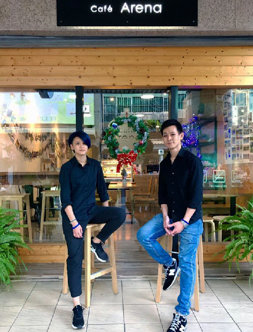

Our Story
My name is Justin Lin. I love coffee and I have always had the dream of “making coffee from the heart.” When I graduated from university, I started working in the tech industry. As an office worker, I had a cup of coffee every day and made sure to always taste it carefully. Eventually, I made up my mind to start roasting my own coffee beans and brewing them for my own satisfaction. How can I brew the best tasting coffee from a variety of different beans? Looking back, that initial dream of brewing the best tasting and most genuine coffee still lives on in Cafe Arena today, and we have never strayed from that path.
In 2015, we moved to Caotun, Nantou, and opened this coffee shop. At first, we were met with new challenges every day. Sometimes we sold only one or two cups of coffee, but we persevered and never gave up. We continued to brew high quality coffee each day, hoping to move our customers’ hearts with the natural and genuine flavors, and never stopped innovating and refining our drinks and desserts.What keeps us motivated is the love of coffee and the many good friends who have supported us along the way. These supportive forces have also become the driving force for the growth of Cafe Arena.
Our Team
Justin LinCo-Founder
Roasting coffee beans, Hand brewed coffee
Tammy LinCo-Founder
Custom cakes, Handmade desserts